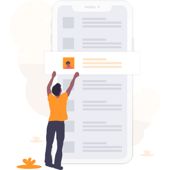

<app-container [footer]="false">
  
  <!-- Botão "agendar post" redireciona o usuário para a Tela de Agendamento -->
  <button routerLink="/agendamento" type="button" class="ui-button ui-button-secondary ui-button-lg ui-margin-x-auto" >Agendar post</button>
</app-container>
